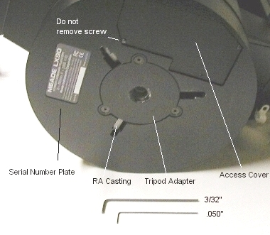
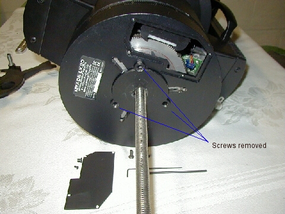
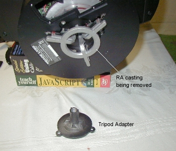
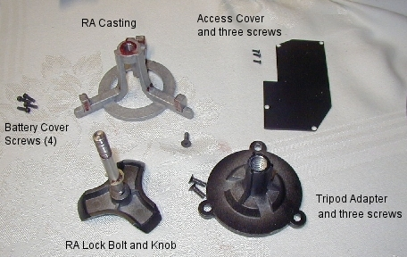
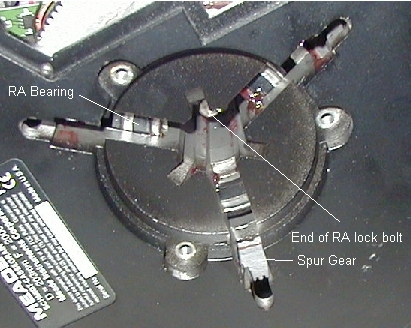
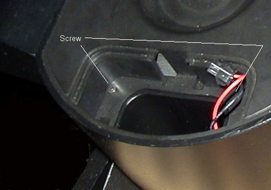
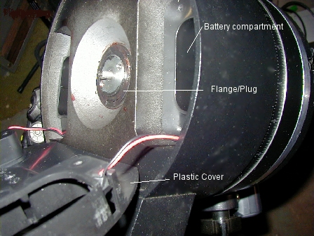
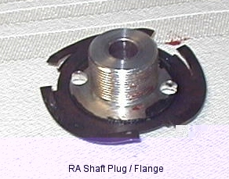
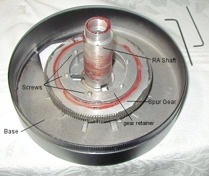
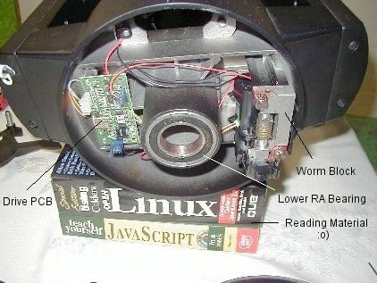

|
LX90 Base -
disassembly and worm access General information The LX90 base is not normally disassembled for access. General adjustments to the worm, degreasing and cleaning, and re-greasing can all be done through the inspection/access cover. It's unnecessary to disassemble the entire base except for the following reasons. 1) The RA drive PCB has
failed, and must be replaced. Before starting work: During the disassembly process, check each part as you remove it and degrease it. Looks for cracks, stripped threads, loose screws or other signs of wear. Make sure the bearings aren't beginning to fail. Make sure the races are tight and not cracked or galled, and that the seals are in place, and grease or oil isn't leaking out from under the seals. Check the wiring for cracks or missing insulation. Make sure they aren't touching any moving surfaces, or being pinched between parts. Make sure the connectors are tight and make a good connection. Degreasing Degreasing can be done by removing the three .05" allen screws from the access cover on the bottom. The last screw can remain in place since it has a slotted hole on the cover.  Once removed, support the telescope OTA and disengage the RA lock. You can now rotate the base around to see different parts of the components inside. You can degrease the inside diameter of the spur gear, and in a similar fashion to the instructions here for the worm gear. There really is no need to go beyond this point for general inspections and degreasing of the worm and spur gear. Removing the Tripod Adapter  The Tripod Adapter is removed by first removing the three allen screws securing it, with a 3/32" allen wrench. The next step is to lock the RA Lock (clockwise) and insert the 1/2x13 threaded rod into the adapter. Thread the rod in until pressure is felt. Then, very gently, tighten the rod a little at a time until the adapter breaks free from the interior of the lower RA shaft. Pull the adapter out while still attached to the rod, remove it from the 1/2x13 rod and set it aside with the three allen screws previously removed. Removing the RA casting / locking bolt and knob  The next part to be removed is the RA casting. If your casting has broken, follow the instructions that came with the new casting, especially those referring to the washers on the 1/2x13 bolt below the spreader. If your bolt can be seen above the tripod adapter when attached to the tripod, you need to add washers so that the casting doesn't break again. Unscrew the RA locking bolt until the RA casting drops through the bottom of the base. Set it aside with the other parts. If you're replacing the casting, the broken piece is still attached to the RA bolt, which we'll remove next.  On the side of the RA knob is a set screw that needs to be loosened before the knob can be removed. Loosen this set screw, then grab the other end of the bolt gently (through the base, now open) with a pair a needle nose pliers, and unthread the knob from the bolt. If you have problems here, unscrew the set screw even farther, or remove it completely. Just don't lose it. When reassembling this knob, be sure the set screw is located above the flat on the bolt before tightening. Once the knob is removed, you can drop the bolt through the bottom of the base. Degrease and re-thread the knob back on the bolt to keep them together.  Removing the battery cover and battery holders The battery holders must be removed at this point. Remove the covers and set aside. Pull out the white holders and unclamp the black connectors and pull them apart. Set the two battery holders aside. Inside each battery compartment are two 3/32" allen head screws, one on each side of the compartment at the top. Remove these four screws (two in each compartment) and set aside.  Once the screws are removed, you can lift the top of the battery compartment (black plastic) away from the actual casting. You can pull the red/black battery wires through the holes if you wish, or just set the whole cover slightly aside. There's no need to completely remove the cover, you just want access to what's underneath it. What's underneath is the part that holds both halves together, shown below.  Separating the Bottom half of the base from the Top Under the battery cover is a spanner type plug/flange that threads into the hollow RA shaft. If you plan to remove the worm, motor, bearings, circuit board or spur gear, this has to be removed. You can use an adjustable spanner, or your needle nose pliers. This flange has a spring steel tensioner (to prevent unscrewing in use), so it's best to unscrew the base from the flange, rather than unscrew the flange from the base. Grip the two holes in the plug/flange with your pliers or spanner, and start unscrewing the base from the top halve. The threads are pretty fine inside the RA shaft, so it will take a little while to fully unthread this flange from the RA shaft. You'll see the gap widening at the RA scale as you unscrew the base.  Once the plug/flange is unscrewed, set it aside and push the worm block back against the worm pivot spring, and drop the RA lower base casting along with the spur gear and gear retainer.  If you're replacing the RA spur gear, remove the six screws holding the retainer in place, and remove/replace the gear/retainer. If just inspecting and degreasing, you can remove and clean / re-grease. Make sure you have enough grease on the RA shaft. The PC board and worm block  At this point, the Drive PCB can be replaced. Make a drawing of the connectors before removing the old PCB and installing the new one. You can go ahead and degrease the worm, and check the adjustments in the same fashion as the declination page. If the bearing is being replaced at this point, drive it out from the top with a brass rod, tapping on the outer race at evenly spaced locations until it drops out of the casting. Drive the new one in with a proper sized bearing driver, The same for the upper bearing if its being replaced. If replacing the worm remove the two pivot screws, taking note of the shim washer locations, and install the new worm and motor. To clean the encoders, the worm assembly should be removed and cleaned separately. Instructions are here for the declination worm and gearbox. The RA assembly is very similar. Reassembly Reassembly is simply the reverse of the above procedures. Note that the bearings are sealed and do not need lubrication. If the inner race seems loose, or grease/oil has dripped out of the seals, or if they're noisy or have tight spots, replace them. I didn't get the number of the bearing when I took the base apart - I completely forget to at the time. I will definitely check to see if it's a stock bearing (It certainly looked like it was). Be sure you hold the worm back when sliding the base back into the bearings. Don't over tighten any screws, and if you think they aren't tightening,. take a break and come back. Take your time and don't strip any threads. Be very sure that screws and holes are lined up before forcing the screws in. Check all cables and wires as you reassemble to prevent any pinched wires or unattached plugs. The RA plug/flange can be tightened by holding it with a spanner or needle-nose pilers, and then tightening the base by turning it clockwise (as viewed from the bottom). Once the gears are back in, reattach the battery cover and reinstall the battery holders. Slide the RA bolt up into the RA shaft (make sure the c-clip is installed on it) and re-attach the knob. Make sure the flat on the bolt is aligned with the set screw on the knob, and thread the knob onto the bolt as far as you can but still align with the flat. Then tighten up the set screw. You can now lubricate the RA casting on the tops of each "foot" where it will tighten against the spur gear. Grease the threads at the top where the RA bolt will screw in, and then slide the casting up into the base, lining it up with the three slots. Tighten the RA lock until the casting is fully draw up into the base. Insert the tripod adapter and then tighten each screw a little at a time before moving to the next. 1/2 turn on each of these screws before going to the next is almost too much. You want the tripod adapter to be drawn up into the lower casting as evenly and as slowly as possible. Do not over tighten these screws! All three should be snug, but not overly tightened to the point of possibly stripping the threads or cracking the casting. Put your batteries back in, replace the covers, and make sure everything works. At the next opportunity, retrain the drives. You should be good for another year or two before needing another cleaning and re-greasing, depending on your usage and environment. How the whole thing works The RA bolt/knob threads into the
RA casting, not the flange or base. When you tighten the RA bolt,
you effectively "lift" the RA casting up against the RA
gear from below (this is the clutch). It's turns are only limited
by the distance the RA casting has to be drawn up to lock the
gear to the shaft, the amount it protrudes above the flange, and
the distance between it and the tripod bolt (or the wedge adapter
bolt). The RA bolt is held in place by the RA casting and a small
c-clip on the shaft. This c-clip is a "keeper", it
holds the RA bolt in place, so that it can't be unscrewed and
removed. That's why you can't pull the bolt out through the top
of the base. || Back
to Contents || Wedge
adapter || Focuser
|| Azimuth
adjuster || Weight
Set || Dovetail
||
|